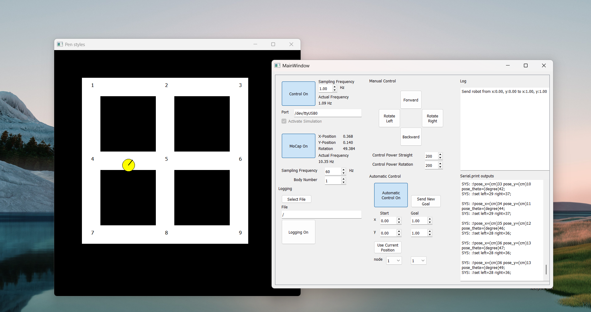

Implementation of an automatic controller for a TurtleBot3 differential-drive robot. Developed as part of the KTH course EL2450 – Hybrid and Embedded Control Systems (VT25).
We modeled the robot’s kinematics and discretized the workspace into regions, which were abstracted as a labeled transition system with safety and behavior constraints such as obstacle avoidance and repeated region visits. Based on this model, we derived a valid high-level plan that the robot could follow.
At the control level, we developed a hybrid controller consisting of an orientation controller and a line-following controller. The robot first aligns itself toward the target region and then drives along a straight path to its center while minimizing deviations. The controllers were designed and analyzed in discrete time, implemented in C, and tuned to ensure stability and safety.
The correctness of the approach was verified using a simulation environment to test convergence, robustness, and safety properties. Finally, the controller was deployed on a real TurtleBot3 robot and validated through a video demonstration showing the robot autonomously executing the planned trajectory.

Simulation environment provided by the course coordinators.
The hybrid controller running on the real TurtleBot3 robot.